I close high-ticket offers, from $6k to $140k, over the phone and on Zoom. Over $3 million in sales in the last two years, at one of Australia's biggest business-education companies, from front-line closer to Head of Success.
Figures from HubSpot, Plecto and commission reports. Original screenshots available on request.
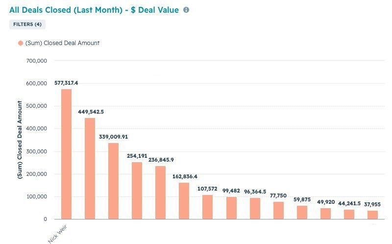
Two of those calls ran three hours each.
The standout was three hours on the phone, walking laps of a park. She had planned to start the two-year program in July 2027. We worked through every objection and fear she had, she brought her timeline forward by 12 months, and she enrolled the same day. $131k.
Every prospect gets a page to work through before we speak, so they show up knowing why they booked. I built my last one from scratch and sent it to every booking.
Most of the call is discovery. I get clear on where they are, where they want to be and what it costs them to stay put, and that gap is what the rest of the call is about.
If someone isn't a fit I tell them on the call. It protects the offer's reputation and keeps collection rates high.
The offer is presented as the plan we just built together. I push for paid-in-full and get payment plans collected, which is why my cash numbers sit close to my deal value.
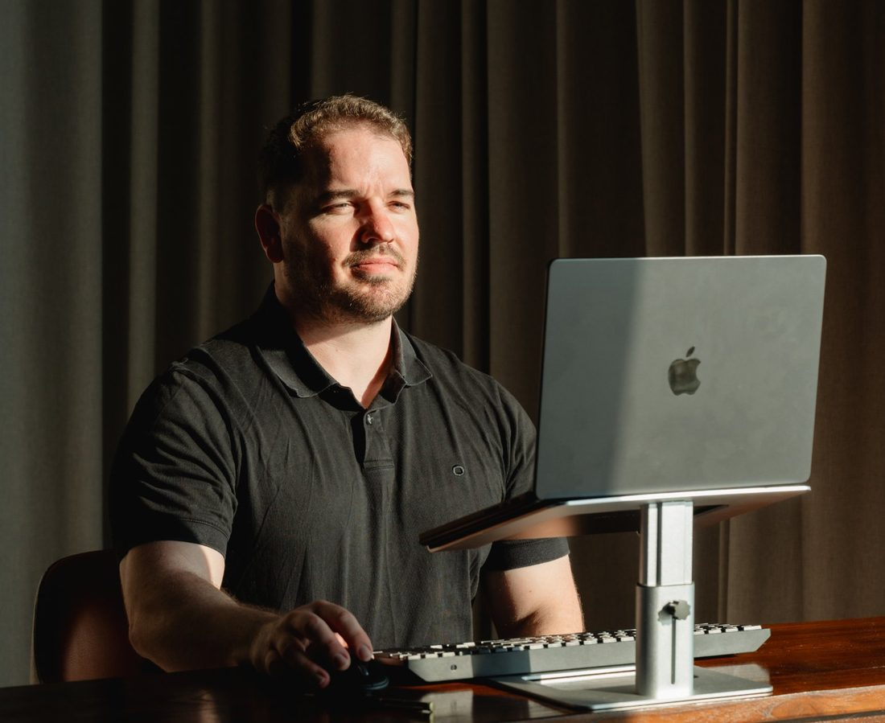
Real moments from real calls. Pick the objection you care about.
She hated doing her own books but wouldn't pay a bookkeeper. I isolated the real fear, then reframed the cost as buying back her highest-value time.
He wanted to pay for coaching once the business was earning. I separated the skill from the business, then reframed the number: what would it be like to see 17k as a small amount?
Careful long-term investors who saw it as a sacrifice. I isolated it, then reframed it as a reallocation: from an asset they can't control to a skill set they can. He landed the decision himself.
I didn't pitch the value. I asked what made him believe it could work, and he answered his own price objection before I could.
She couldn't put a number on education and it made her nervous. I didn't argue the maths. I moved her to the one thing she can guarantee: her own commitment.
A renovation, commitments, and a plan to start "after". I made it about priority, not time, and showed them what "after" usually turns into: a pattern.
Before any offer, I named the stall most people fall back on ("I need to think about it") and asked if that's what she was operating on. She took it off the table herself.
They wanted a recap to go away and think. Before sending anything, I checked whether they believed it would work. They answered their own stall.
He wanted to take it to his wife on his own. An email wouldn't carry the context, so I booked a time to walk them both through it.
I respected it, then isolated it. If the family's on board, is he? Family aside, does he believe it works? That surfaced the real concern: the initial investment.
She'd been burned by a program before and lost money. I didn't defend or promise. I acknowledged it, then asked who's 50% of the equation.
A developer who wanted to perfect the app before getting help. I asked what would actually be different in four months, then showed him why guidance matters most before you build.
He wanted a year of safety net before starting. Buried in his own answer was the reason he didn't need one. I played his words back: so what's the actual risk?
Book smart, scared she couldn't implement. I gave her permission to start at six out of ten and showed her where the support comes in.
She was stuck on a decision she couldn't undo. I moved her from regret to choice: even not doing something is doing something.
She thought her team was the problem. A few questions later she saw that always being available was the bottleneck, and what it was costing her.
After the money and the self-doubt, she came back to why she was on the call and closed herself. My job here was to get out of the way.
A full discovery-to-close call with a first-time business buyer who opened by telling me she thought it was an MLM. Her face and identifying details are blurred, and the screen-share pitch is cut so you hear the conversation.
I welcomed it instead of defending: “I'd be worried if you weren't.” Got specific on what felt off, answered it straight (no recruiting, no downline), and told her that if it wasn't a fit I'd say so.
Her first answer was “retire in 10 years, no significance.” I pushed until we found it: family overseas she'd barely seen in 15 years, and wanting to teach her grandkids that money is a tool, not a master.
No get-rich-quick. Going from employee to owner is an identity shift, it's hard, and most people who say “I'll think about it” never come back. I made it clear we screen people too.
Fear of failure had stalled her for two years. I asked how she learned to drive, then showed her it took one client 86 businesses to find the right one. She said that line alone gave her permission to fail.
I walked her through the next 10 years if nothing changed. She landed on it herself, then told me she was braver and stronger than two years ago and that this was the right time.
Raised mid-presentation. I reframed it as resourcefulness, laid out both payment options and the refund policy plainly, and let her choose. She chose to pay in full over the payment plan.
“I like that you haven't done the hype.”The buyer, just after deciding
McDonald's. Where I learned to work fast, work a rush and turn up on time.
Childcare. Patience, trust, and getting parents comfortable handing over the most important thing in their life.
In-person sales. Thousands of face-to-face conversations with people spending real money on something they wanted.
Personal trainer and fitness and mindset coach. Trained and coached by Sebastian Oreb at Strength System. Getting people to commit to change and stick to it.
Aaron Sansoni Group. Closer, then Head of Success: closing the program suite, live call coaching, working events across Sydney, Melbourne, Brisbane and Perth. HubSpot, Aircall, Kajabi, Chargify.
Education: Bachelor of Science, Human Biology.
Base Gym, Strength System, Sydney. Same discipline, different arena: train for years, show up on the hard days, and perform when it counts.
Featured in print. See the magazine feature
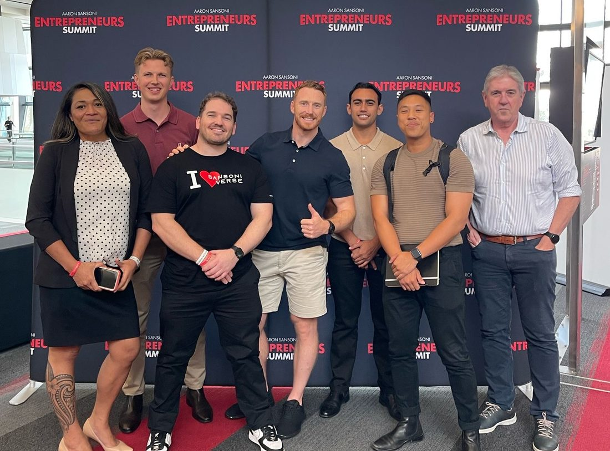
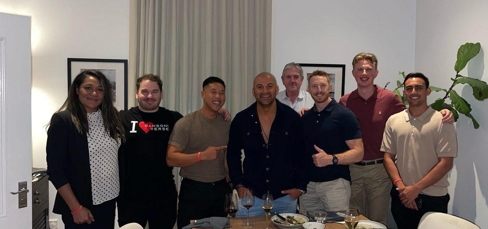
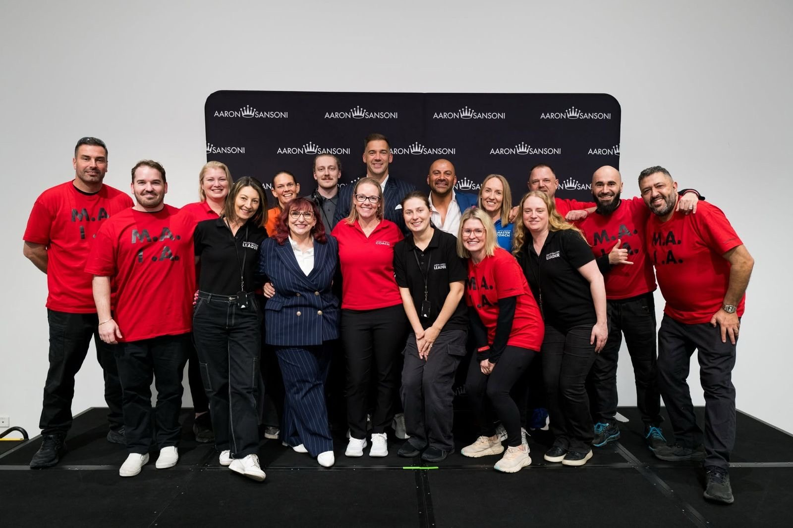
Over $100k invested in mentoring and coaching. I still train every week, because the best closers never stop being students.
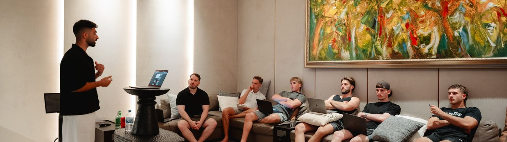
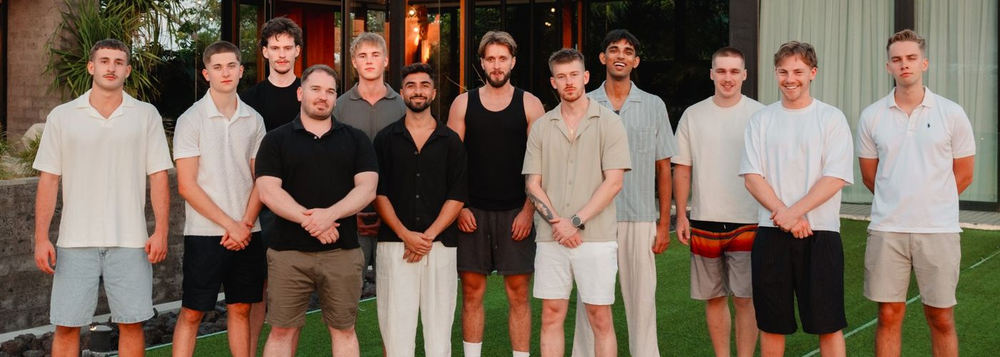
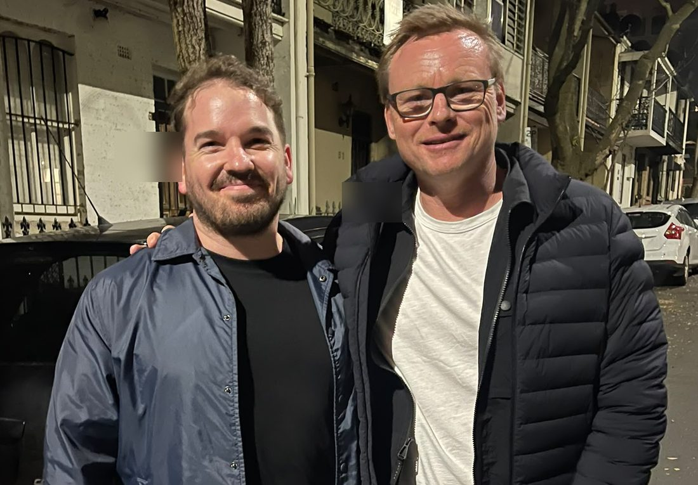
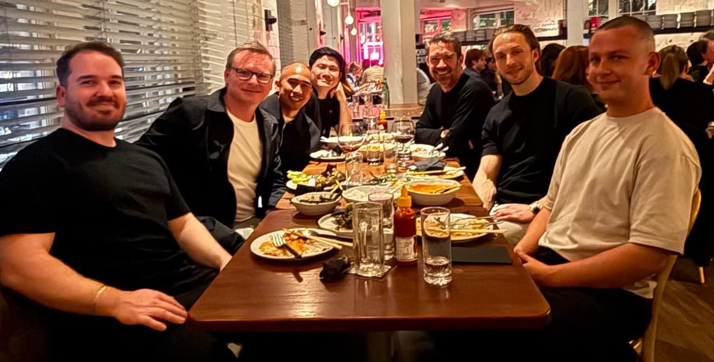
I can outbound and self-set. If lead flow drops, I don't sit around waiting for the calendar to fill. I farm the CRM, re-engage old leads and no-shows, and book my own calls. My day is built around revenue-generating activity.
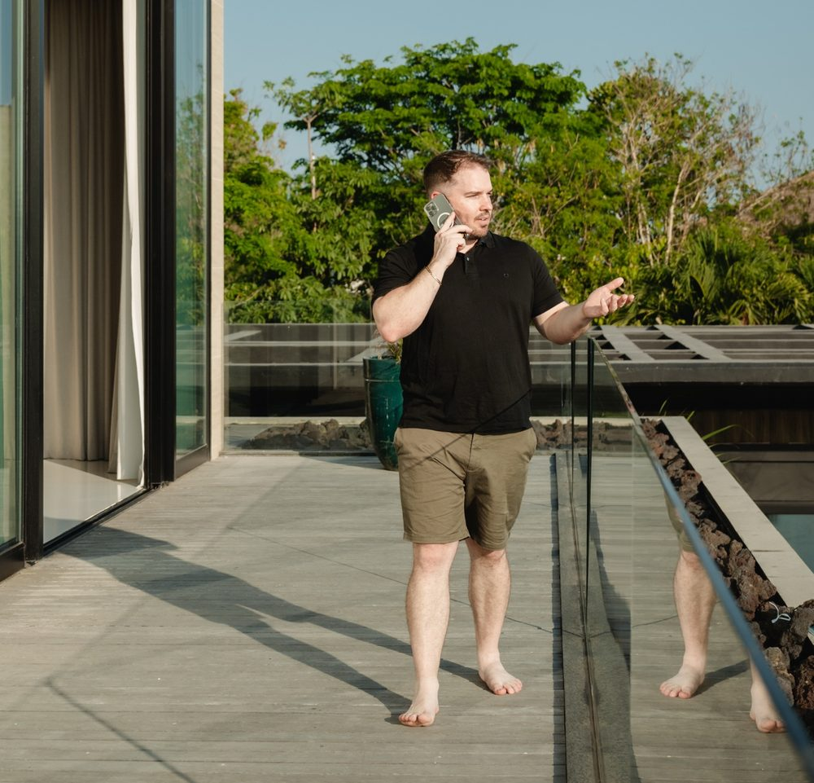
Yes. Sydney mornings line up with US afternoons and evenings, and I'm used to booking calls around buyers in other time zones.
Both. I close set and inbound calls, and I can outbound and self-set when lead flow is light. I work the CRM daily: old leads, no-shows and past enquiries are pipeline, not dead weight. I've also worked closely with setter teams on scripts.
Yes. Ask me on our call and I'll share a full recording with the buyer's details removed.
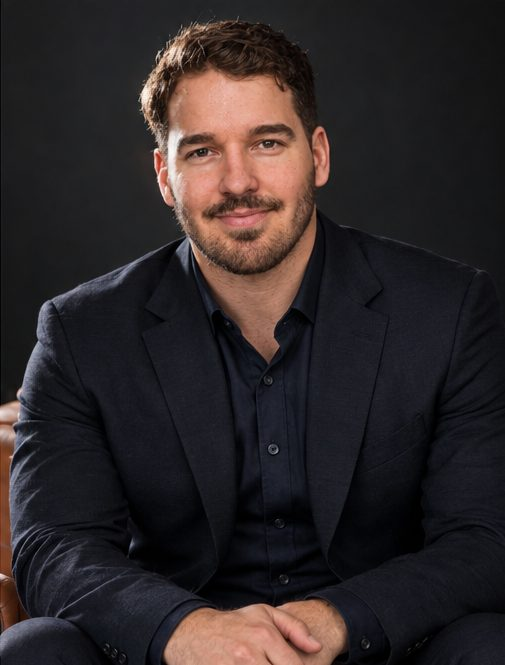
Next stepBook a 30-minute call straight into my calendar, or message me on WhatsApp.